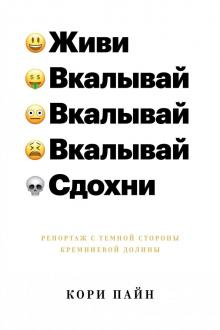

5 Книг
Краткое содержание:
На этой странице я бы хотел рассказать про 5 книг которые я бы хотел прочитать.
В своей жизни я очень мало читал так как не мог найти книг которые удовлетворяли бы мои предпочтения.
Уверен что есть такие же люди которые хотели бы читать но не знают с чего начать,
поетому я решил сделать страницу которая решит эту проблему.
Живи, вкалывай, здохни - Кори Пайн
Бунт на продажу - Джозеф Хиз
Ководство - Артемий Лебедев
Приемы общение с любым человеком, в любой ситуации - Мосс Дуглас
Задача трёх тел - Лю Цысинь

Живи, вкалывай, здохни - Кори Пайн

Как показывает опыт XXI века — к плохому быстро привыкаешь. К непонятному тоже. Большинство людей спокойно принимает утечки персональных данных из соцсетей, навязчивую рекламу подобранную на основе того, что они ищут и о чем говорят дома, беспощадные системы, контролирующие эффективность работников, молниеносную трансформацию и исчезновение отраслей бизнеса — но можно ли назвать это прогрессом? И, что важнее — что в головах у тех, кто ответственен за радикальные перемены в экономике и в обществе?
"Живи, вкалывай, сдохни" британского журналиста и предпринимателя Кори Пайна — головокружительное путешествие по миру Кремниевой долины, раскрывающее всю подноготную мира больших IT-компаний и крошечных стартапов: от ставших нарицательными бытовых неурядиц вроде зашкаливающих цен на аренду до беспощадной идеологии.
Бунт на продажу - Джозеф Хиз
.jpg)
Книга оказалась неожиданно сложной для моего понимания и осмысления. Несмотря на то, что авторы пишут довольно легко, читать ее пришлось медленно. Периодические ссылки и цитаты работ философов, научных и общественных деятелей и прочую литературу несколько загружают сознание
Краткое содержание книги можно целиком выразить ее подзаголовком: «Как контркультура создает новую культуру потребления».
Это не бизнес-литература. Эта книга — чистой воды философский социальный трактат на тему современного общества — обстоятельный и подробный.
Смог ли я извлечь из нее что-то ценной? Хм… В краткосрочной перспективе, наверно, нет. Однако некоторые знания, полученные мной из каких-либо источников прежде, стали более полными.
Ководство - Артемий Лебедев
.jpg)
«Ководство», являясь отражением мировоззрения и личного мнения автора, посвящено дизайну как образу жизни и мысли.
Дизайнер, вопреки превратному представлению большинства, не только водит мышью по столу, он живет своей профессией, делая из хаоса порядок.
Он владеет умами и создает настроения.
Хороший дизайнер управляет людьми с помощью своих произведений, плохому нужна плетка-семихвостка.
В «Ководстве» нет готовых рецептов дизайнерского успеха, потому что их вообще никто не знает.
А как употреблять пищу для ума — за столом с хорошим вином или глотая кусками с картонной тарелочки — дело читателя.
Приемы общение с любым человеком, в любой ситуации - Мосс Дуглас
.jpg)
Перед вами уникальная книга!
Она поможет вам освоить приемы общения Дейла Карнеги. Быстро. Надежно. Максимально эффективно!
Все приемы Карнеги изложены четко, сжато — всего в 10 уроках.
Практические упражнения к каждому уроку помогут быстро освоить все советы мастера общения и научиться применять их в реальной жизни.
Разобраны типичные трудности, которые могут возникнуть при освоении приемов, и указаны пути их преодоления.
Эта книга-тренинг будет полезна всем, кто хочет научиться убеждать и достигать всех своих целей!
Задача трёх тел - Лю Цысинь
.jpg)
В те времена, когда Китай переживал последствия жестокой «культурной революции», в ходе секретного военного проекта в космос были посланы сигналы, чтобы установить контакт с инопланетным разумом.
Один из сигналов подхватила цивилизация, находящаяся на краю гибели, и теперь пришельцы готовятся вторгнуться на Землю.
Узнав об этом, люди разделились на тех, кто готов отдать наш порочный мир под управление высшего разума, и тех, кто до последнего будет бороться против этого вторжения.
Блестящий научно-фантастический роман «Задача трех тел» самого популярного китайского писателя Лю Цысиня обрел широкое мировое признание и стал первой переводной книгой, номинированной на самые престижные литературные премии в области фантастики: «Хьюго», «Небьюлу», «Локус», «Прометей» и другие.
Вот и подошёл конец моему топу книжек
Желаю удачи и терпения:)